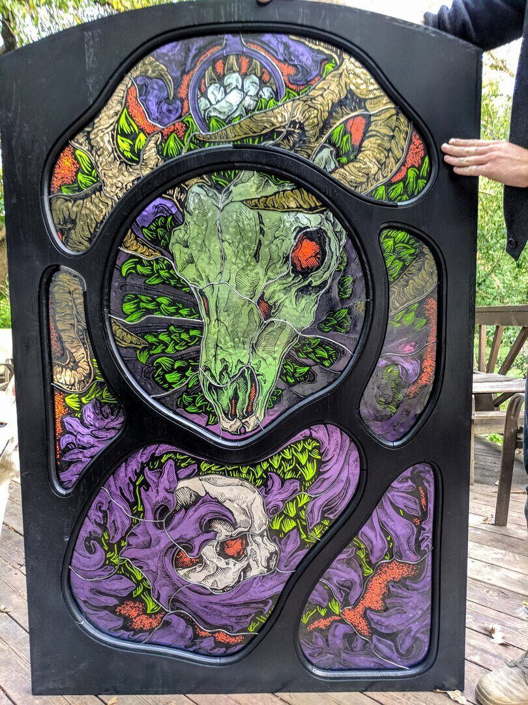
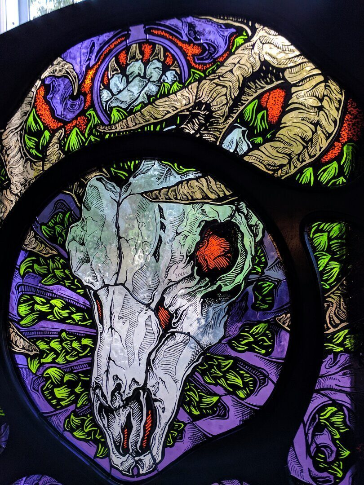
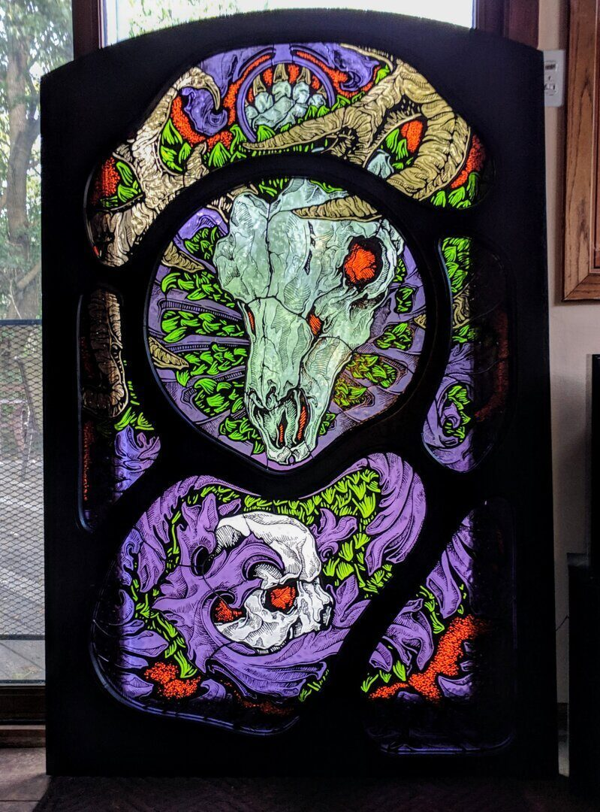
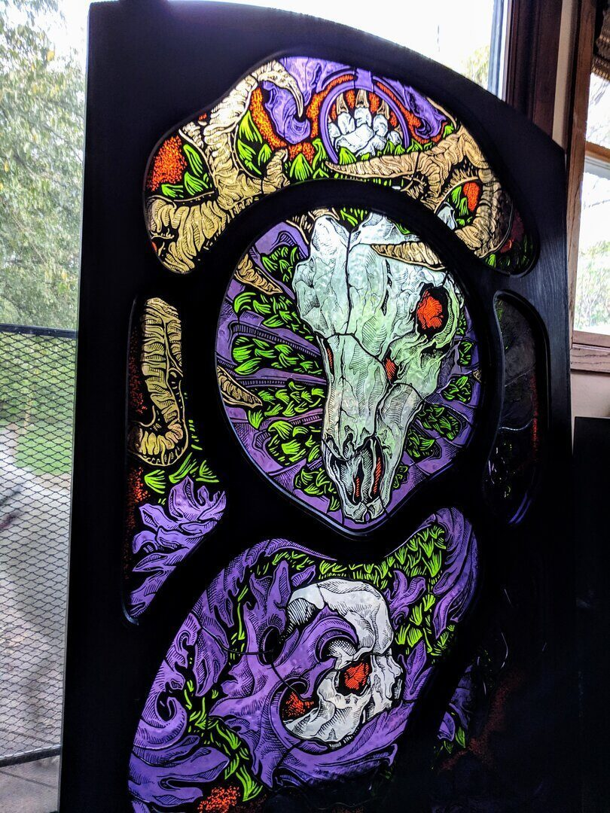
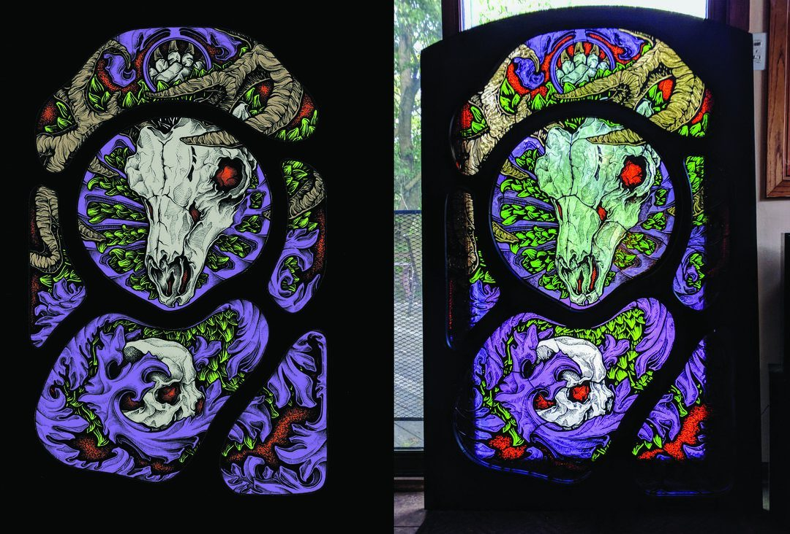

Glass / 2020
Stained Glass for Kuma's
Custom stained glass panels
Custom stained glass panels for Kuma's Corner, translating the restaurant's heavy graphic language into lead, color, and transmitted light.
The stained glass for Kuma's turns the restaurant's visual culture into something slower, heavier, and more architectural.
Lead came, colored glass, solder lines, and backlighting give the imagery a physical presence that changes through the day.
The project extends the studio's restaurant fabrication work into a more traditional craft vocabulary while keeping the attitude of the space intact.
Details
- Year
2020 - Location
Chicago, IL - Category
Glass - Materials
Stained glass, lead came, solder, patina
Credits
- Client: Kuma's Corner
- Collaborators: Adam Schadenfroh and Steven Krejcik
Download
Index




